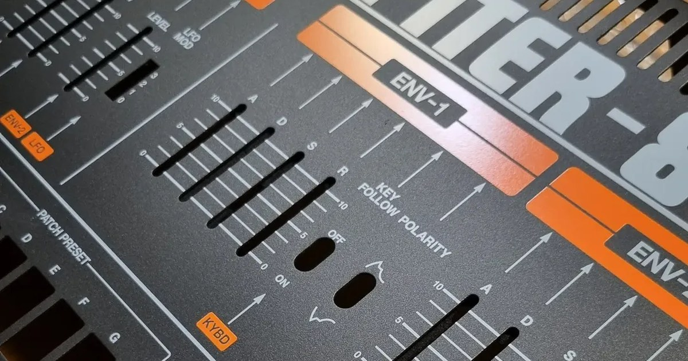
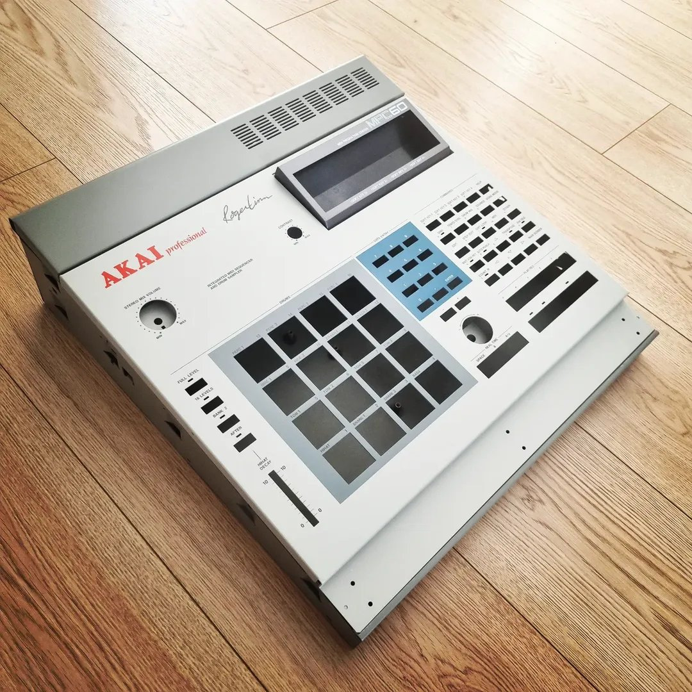
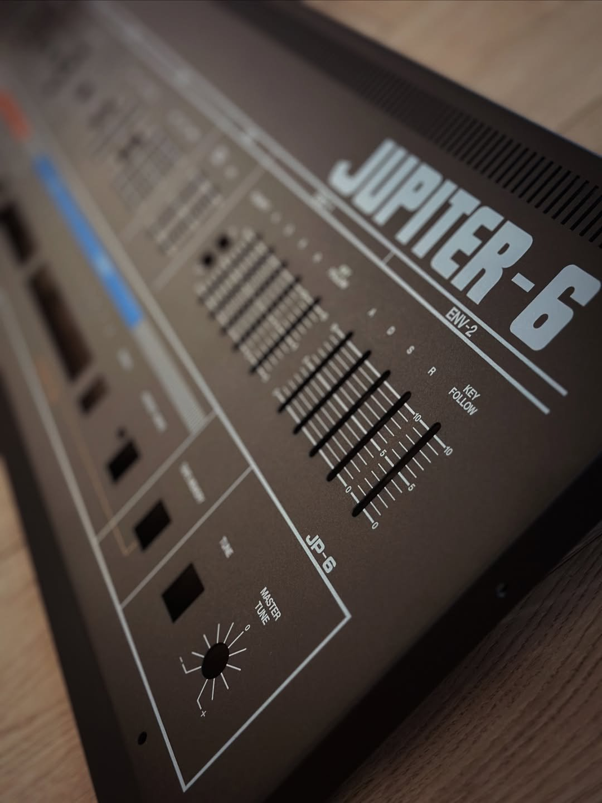
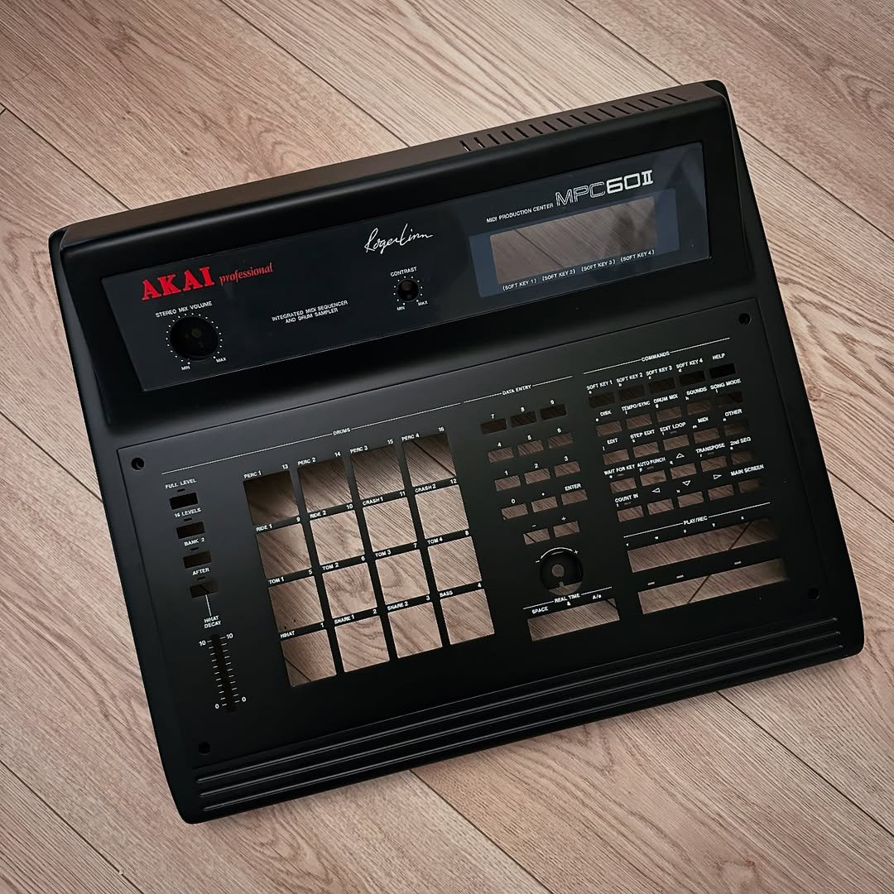
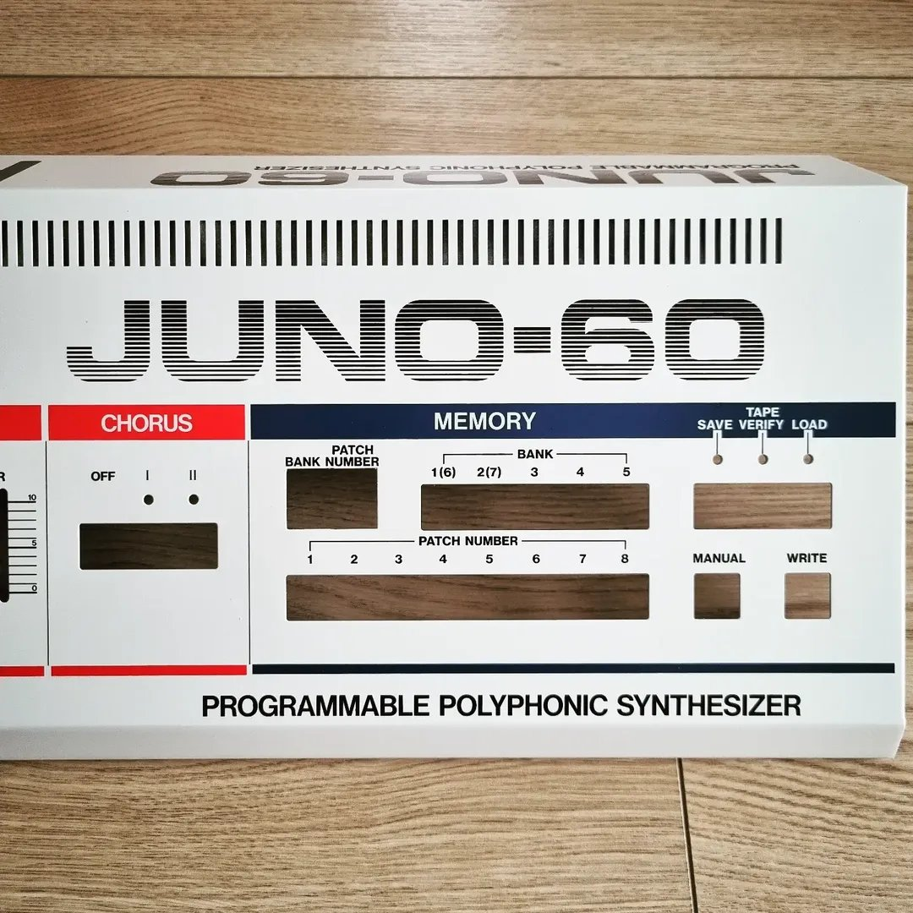
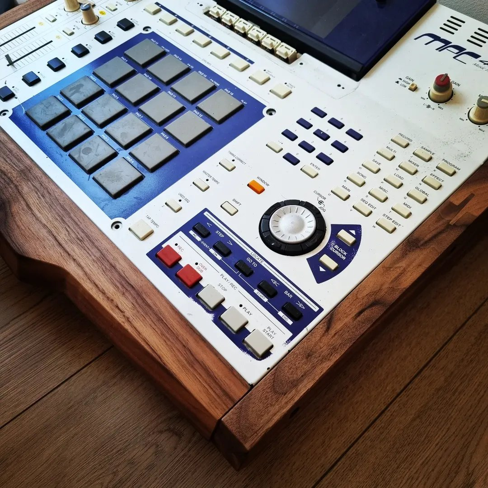
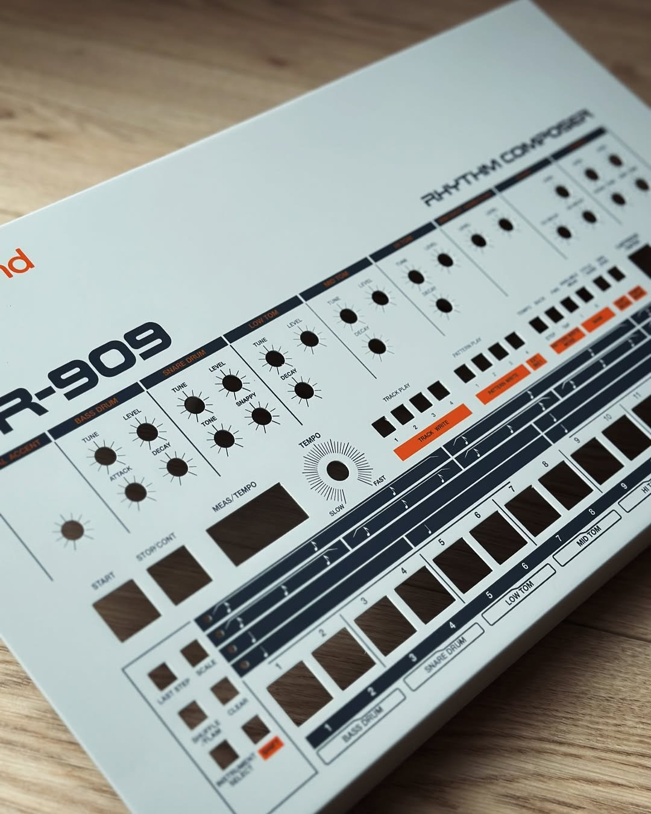

Breathing life into synthesizers and samplers since 2013. Faceplates, panels and side cheeks — restored to factory spec or reimagined in custom finishes.

It started in 2013 with an Akai MPC on the bench. More than a decade later, Audio Custom has turned into a workshop dedicated to one thing — the visual side of legendary instruments.
We restore corroded, scratched and bent panels back to factory condition. Aluminium side cheeks for the Jupiter-8, wooden cheeks for the MPC 3000, full faceplates for Roland Space Echo 201 and 301 — each piece is straightened, refinished and finished by hand.
Or, if you prefer, we go the other way: a custom design in a colour of your choosing. The instrument stays the same. The way it looks on stage doesn't.
We work with private collectors, with musicians who want to keep their gear playing for another forty years, with recording studios — and with hardware makers who need finished panels for the synths they're building today.
Every job is hand-finished. No two pieces leave the shop identical, because no two pieces arrive that way.





